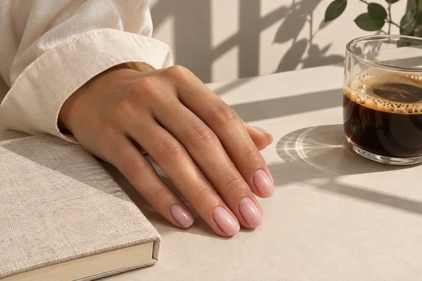
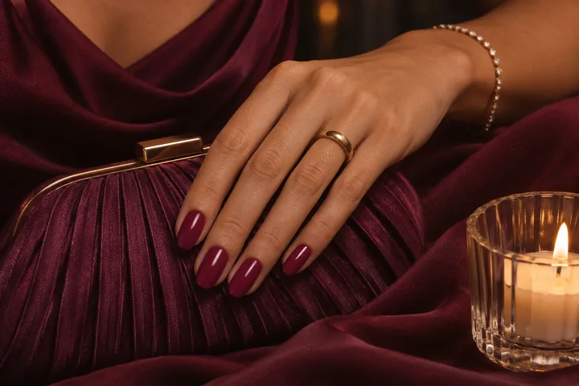

Uma manhã em movimento.
Rosa translúcido e unhas curtas. A cor aparece de perto e deixa o fundo da unha à vista.
Levar este estiloDuas referências para decidir o que você quer destacar no dia a dia ou em um encontro.
Folhear as ocasiões
Rosa translúcido e unhas curtas. A cor aparece de perto e deixa o fundo da unha à vista.
Levar este estilo
Um vinho brilhante para dar contraste. Se quiser destacar só um detalhe, leve a cor como ponto de partida para conversar sobre nail art.
Levar este estilo